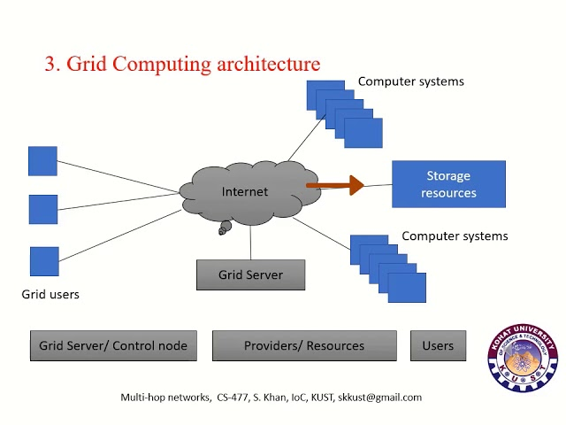
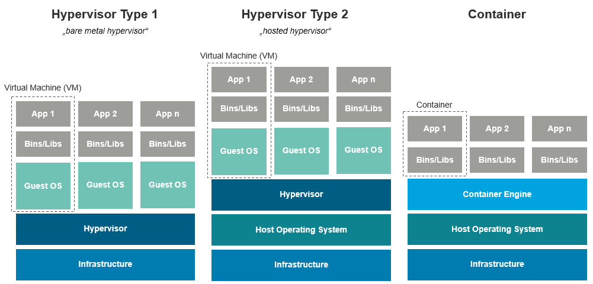
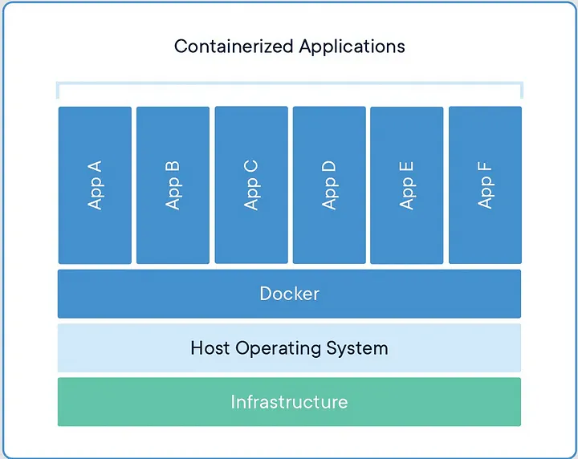
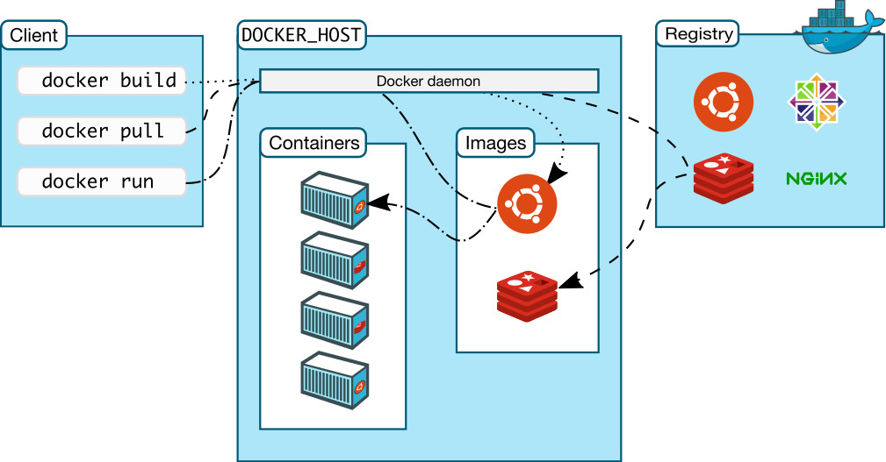

aa
1. 클라우드 기반 기술
1.1 그리드 컴퓨팅

- 그리드 컴퓨팅 : 여러 대의 물리적 서버를 초고속 네트워크로 연결해 마치 하나의 강력한 컴퓨터처럼 활용하는 것
- 분산된 물리적 자원을 통합하여 하나의 시스템처럼 운영.
- 데이터 센터 전체의 하드웨어 자원을 단일 리소스 풀로 추상화.
수 많은 네트워크 장비들, 스토리지 장비 , cpu 장비들이 초고속 네트워크로 묶여 있음
Server Resource Provisioning : CPU, Memory, IO 등과 같은 실제 서버의 자원을 할당해주고 운영할 수 있게 제공해주는 것을 말한다.
클라우드 콘솔에서 서버를 빌리는 요청을 하면, 클라우드는
그리드 컴퓨터팅을 기반으로 하나의 시스템 처럼 동작하는 데이터 센터에 가상화 기술을 적용한 VM 을 한대 사용자에게 제공 하는 것
- 가상화 기술을 적용하지 않고 실제 물리 서버 한대를 빌려주는 것을 Bare Metal 서비스 라 한다.
- 우리가 사용하게 될 서비스는 가상화 기술이 적용된 논리적인 서버이며, Naver Cloud 에서는 Bare Metal 서비스도 제공한다.
1.2가상화 기술
- 가상화(假像化, virtualization)는 컴퓨터에서 컴퓨터 리소스의 추상화를 일컫는 광범위한 용어이다.
- 컴퓨터 과학에서 virtual 이란 말은 논리적인 과 동의어이다.
- virtual memory
- virtual machine
- virtual network
- 컴퓨터 과학에서 virtual 이란 말은 논리적인 과 동의어이다.
- 즉 하나의 물리적인 장비를 효율적으로 사용하기 위하여 논리적으로 격리하여 사용 하는 것

호스트 os 형
- host 머신 위에 Guest Os 구동, 성능 문제로 사용 x
- vmware
hypervisor 가상화
- 호스트 os 없이 h/w 위에 여러 os 를 설치해 가상화 함. 호스트 os 가 필요 없어 오버헤드가 적다.
- KVM (kernel-based virtual machine)
- Hyper-v ( window server )
KVM
Linux OS를 Type1 하이퍼바이저로 전환한다. 즉, Linux 커널에 KVM 하이퍼바이저가 위치하게 된다.
컨테이너 가상화
- 호스트 OS위에 컨테이너관리 소프트웨어를 설치하여, 논리적으로 컨테이너를 나누어 사용
- 컨테이너는 어플리케이션 동작을 위한 라이브러리와 어플리케이션등으로 구성되기때문에 이를 각각 개별 서버처럼 사용가능
장점
- 호스트 OS의 커널을 공유하므로 자원이 적게 소모되고 빠른 부팅 가능.
- GuestOs 의 설치가 필요하지 않다. - 실행 속도가 빠르고 자원 소비가 적음.
- 컨테이너 이미지를 사용하여 애플리케이션 배포 및 관리를 단순화
- 개발시 발생할 수 있는 충돌을 없애준다. 컨테이너 host os 의 커널을 공유하기는 하지만 격리된 공간으로 동작하기 때문이다.
- 이로 인해 jenkins 에서 docker 이미지 화를 시켜 운영 서버에 docker container 로 올리는 경우가 많은 것
컨테이너 와 hypervisor 의 차이
컨테이너 는 os 수준에서 사상화를 제공하며, 호스트 os 커널을 고유
hypervisor 는 하드웨어 위에 여러 os 가 실행될 수 있는 하드웨어 수준의 가상화를 제공하며, Guest os 마다 독집적인 os 를 설치해야함
2. Docker

2.1. Docker란?
- Docker는 컨테이너 기반 가상화 플랫폼이다.
- 애플리케이션과 그 종속성을 독립된 환경(컨테이너)에서 실행한다.
- 개발, 테스트, 배포의 일관성을 유지할 수 있는 도구다.

2. 2. Docker의 주요 개념
-
이미지(Image):
- 컨테이너를 실행하기 위한 템플릿이다.
- 파일 시스템과 애플리케이션, 종속성을 포함한다.
- 예:
nginx,mysql,python:3.9.
-
컨테이너(Container):
- 실행 중인 이미지의 인스턴스다.
- 가볍고 빠르게 실행 가능하며, 애플리케이션이 격리된 상태로 실행된다.
-
Dockerfile:
- 이미지를 생성하기 위한 스크립트 파일이다.
- 애플리케이션 빌드 과정을 자동화한다.
# Dockerfile
# 1. base-image 선택
FROM node:alpine
# 2. 필요 작업 실행
RUN cd /usr && mkdir app WORKDIR '/usr/app'
# package.json을 먼저 COPY하고 npm install 함으로써 소스 코드 변경시 불필요하게 npm install 안하도록 설정
COPY package*.json ./
RUN npm install # 소스코드 COPY COPY ./ ./
# 3. 실행 커맨드 입력
CMD ["npm", "run", "start"]- Docker Hub:
- 도커 이미지를 공유하고 다운로드할 수 있는 공식 저장소다.
- URL: https://hub.docker.com